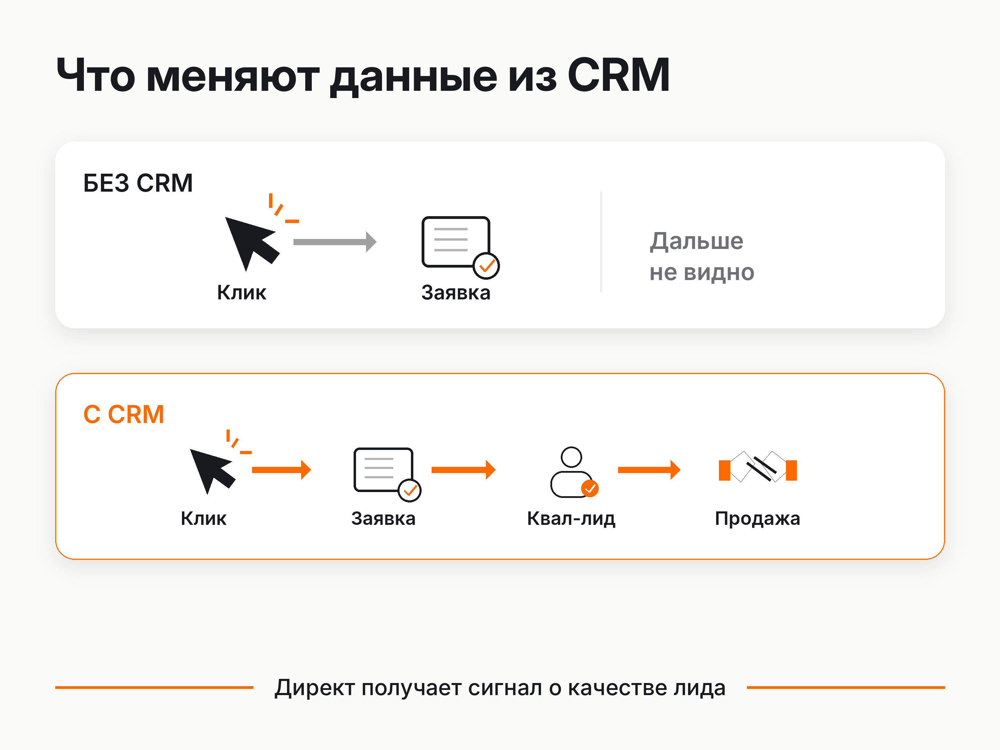
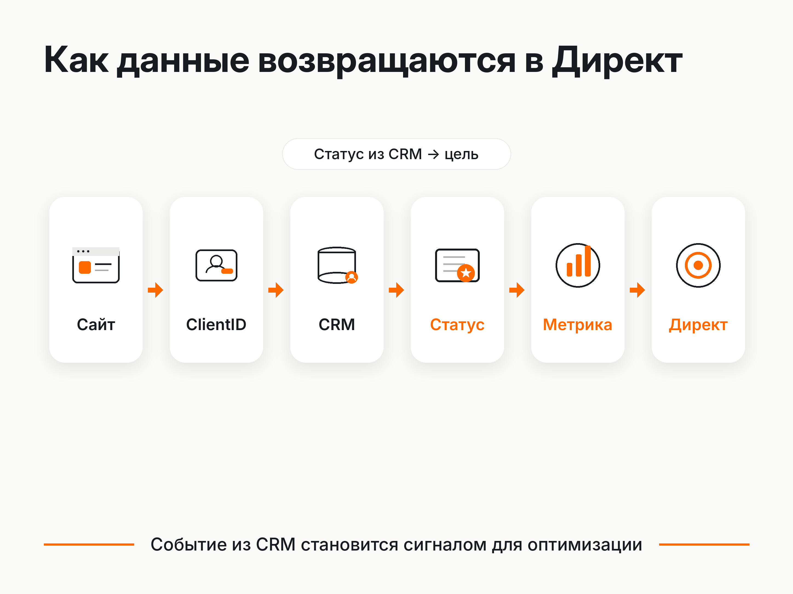
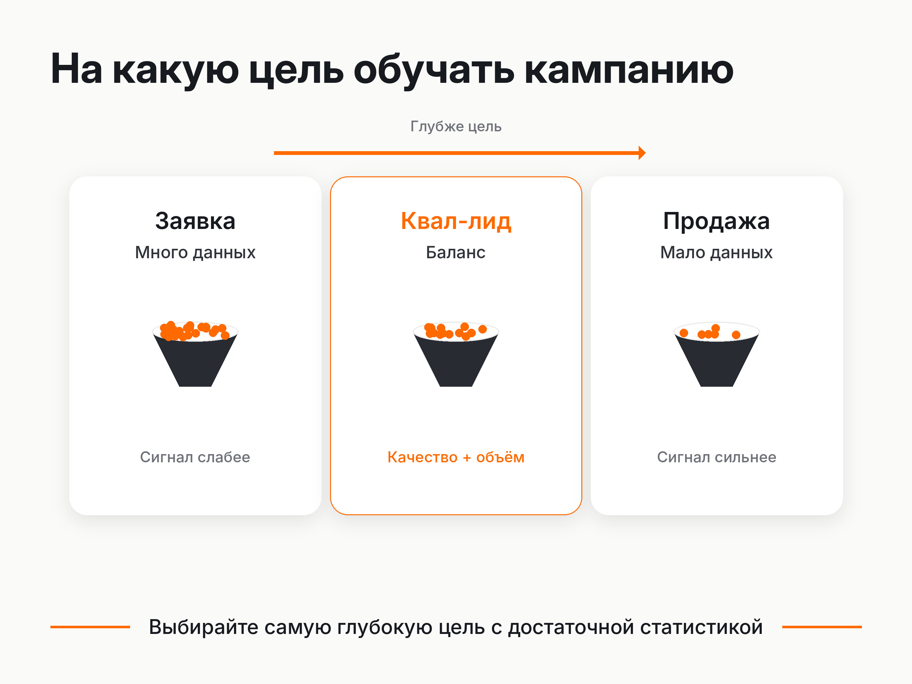

Блог о платном трафике
Офлайн-конверсии в Яндекс Директ и Метрике
Офлайн-конверсии позволяют передавать в Яндекс Метрику то, что произошло с клиентом после заявки на сайте.
Офлайн-конверсии позволяют передавать в Яндекс Метрику то, что произошло с клиентом после заявки на сайте: квалификацию лида, запись, договор, оплату, выкуп заказа и другие этапы продажи. После этого данные можно анализировать в Метрике и использовать как цели для оптимизации рекламных кампаний в Яндекс Директе.
И здесь название немного сбивает с толку. Офлайн-конверсия совсем не обязательно означает покупку в физическом магазине.
Человек может оставить заявку на сайте, менеджер обработает ее в CRM, проведет переговоры по телефону, выставит счет по электронной почте, а клиент оплатит его через интернет. Для Метрики подтвержденная сделка все равно может передаваться как офлайн-событие, потому что сам факт продажи произошел за пределами сайта и обычный счетчик его не увидел.
Для бизнеса с лидогенерацией это один из способов дать Директу информацию о качестве заявок, а не ограничиваться фактом отправки формы.
Что такое офлайн-конверсии в Яндекс Метрике
Обычная цель Метрики фиксирует действие непосредственно на сайте:
- отправлена форма;
- совершен звонок;
- оформлен заказ;
- нажата определенная кнопка.
Но после получения обращения начинается другая часть воронки:
Клик -> заявка -> квалифицированный лид -> договор -> оплата
Метрика самостоятельно не знает, что произошло после первого обращения. Эта информация обычно находится в CRM, системе коллтрекинга, программе учета заказов или другой внутренней системе бизнеса.
Офлайн-конверсии позволяют вернуть эти сведения обратно в Метрику.
Например, можно передавать события:
- «Квалифицированный лид»;
- «Запись подтверждена»;
- «Встреча состоялась»;
- «Договор подписан»;
- «Заказ выкуплен»;
- «Сделка оплачена».
Яндекс прямо указывает, что такие цели можно использовать для анализа и оптимизации Директа на подтвержденные действия, включая выкупленные заказы, подписанные договоры и оплату после заявки.
Зачем передавать офлайн-конверсии в Яндекс Директ
Главная проблема оптимизации только по заявкам с сайта заключается в том, что для рекламного алгоритма все успешно отправленные формы выглядят примерно одинаково.
Допустим, одна кампания приводит много обращений, но менеджеры регулярно отмечают их как нецелевые. Другая дает меньше заявок, зато значительная часть клиентов подходит бизнесу и продолжает общение с отделом продаж.
Если стратегия обучается только на цели «Отправка формы», Директ не получает информации об этой разнице.
При передаче статусов из CRM появляется дополнительный уровень данных.
| Без данных из CRM | С офлайн-конверсиями |
|---|---|
| Отправка формы | Квалифицированная заявка |
| Любой звонок | Подходящий клиент |
| Оформленный заказ | Выкупленный заказ |
| Первичное обращение | Подписанный договор |
| Заявка | Оплаченная сделка |
У Яндекса появляется возможность связать рекламный переход с тем, что произошло дальше в продажах.
Это полезно сразу в двух направлениях.
Первое - аналитика. Можно сравнивать кампании по стоимости нормального лида, сделки или оплаты.
Второе - управление рекламой. Глубокие CRM-цели можно использовать как цели конверсионных стратегий Директа.

Офлайн-конверсии особенно важны там, где качество лидов сильно различается
Я бы в первую очередь рассматривал передачу данных из CRM в проектах, где отправка формы еще мало говорит о реальном результате.
Типичные примеры:
- B2B и производство;
- медицина;
- недвижимость;
- строительство;
- образование;
- юридические услуги;
- сложные услуги с высоким чеком;
- оптовые продажи;
- проекты с длинным циклом принятия решения.
Для таких ниш цель «Заявка» часто слишком поверхностная.
Два обращения могут стоить одинаково, но одно окажется спамом или совершенно неподходящим клиентом, а второе дойдет до договора.
Если отдел продаж уже классифицирует заявки внутри CRM, эти данные имеет смысл использовать и в рекламе.
Яндекс позволяет создавать собственные статусы, например «Квал-лид» или «Договор подписан», связывать их с целями Метрики и затем выбирать эти цели в Яндекс Директе.
Как офлайн-конверсии помогают обучать рекламные кампании на качественных лидах
Представим две рекламные кампании.
Первая регулярно приносит дешевые заявки, но большая часть обращений не проходит квалификацию.
Вторая дает более дорогие первичные лиды, зато среди них чаще встречаются реальные покупатели.
Если оптимизация идет по отправке формы, первая кампания может выглядеть для алгоритма предпочтительнее.
Если из CRM передавать цель «Квалифицированный лид», картина меняется. Директ получает данные о пользователях, которых бизнес действительно считает перспективными.
Для алгоритма появляется более полезный сигнал:
не человек, который способен заполнить форму, а человек, похожий на тех, кто проходит дальнейший этап воронки.
Именно поэтому передача офлайн-конверсий может существенно изменить логику оптимизации рекламы.
Но выбирать самую глубокую цель автоматически тоже не стоит.
Если оплаченных сделок мало, алгоритму может не хватать статистики. В таком случае разумнее сначала использовать более частое событие, например квалифицированный лид, подтвержденную запись или состоявшуюся встречу.
Яндекс рекомендует для конверсионных стратегий иметь бюджет, достаточный примерно для 10-20 конверсий в неделю. При меньшем количестве данных обучение стратегии может быть затруднено.
Практический принцип здесь простой:
выбирать максимально глубокую бизнес-цель, по которой одновременно собирается достаточный объем статистики.
Это нужно не только интернет-магазинам
Офлайн-конверсии часто связывают с электронной коммерцией: человек оформил заказ на сайте, затем забрал его в пункте выдачи, после чего бизнес передал в Метрику факт выкупа.
Это действительно один из очевидных сценариев.
Но для лидогенерации технология может быть еще полезнее.
У интернет-магазина сайт часто уже знает стоимость оформленного заказа. В услугах форма обычно сообщает Директу только факт обращения.
Что представляет собой этот лид, рекламная система пока не знает.
После подключения CRM можно построить другую цепочку:
Реклама -> заявка -> CRM -> квалификация -> сделка -> Метрика -> Директ
В результате рекламная система получает обратную связь уже от продаж.
Для B2B, услуг и других проектов с длинной воронкой это может быть намного полезнее простой оптимизации на любую отправку формы.
Какие данные имеет смысл передавать из CRM
Не нужно превращать каждый статус менеджера в отдельную рекламную цель.
Передавать стоит этапы, которые действительно меняют ценность клиента для бизнеса.
Например:
- Заявка создана.
- Лид квалифицирован.
- Состоялась консультация или встреча.
- Договор подписан.
- Сделка оплачена.
Конкретный набор зависит от воронки.
Для стоматологии это может быть подтвержденная запись или состоявшийся прием.
Для производства - квалифицированная заявка с подходящим объемом заказа.
Для B2B-услуги - переход к коммерческому предложению или подписанный договор.
Для интернет-магазина - выкупленный и оплаченный заказ.
Метрика поддерживает стандартные CRM-статусы, включая созданный, оплаченный, отмененный и спам-заказ, а также собственные статусы бизнеса.
Как работает передача офлайн-конверсий в Метрику
В упрощенном виде схема выглядит так:
Посетитель -> сайт -> ClientID -> заявка -> CRM -> новый статус -> Метрика -> Директ
1. Пользователь приходит на сайт
Яндекс Метрика присваивает посетителю ClientID.
Это идентификатор, по которому впоследствии можно связать данные из CRM с первоначальным визитом.
2. ClientID сохраняется вместе с заявкой
При отправке формы ClientID желательно записать в отдельное поле CRM вместе с контактными данными клиента.
Яндекс называет ClientID рекомендуемым идентификатором для передачи офлайн-данных, поскольку он обеспечивает наиболее точную привязку к визитам.
3. Менеджер работает с заявкой
Лид движется по обычной воронке CRM:
Новый -> Квалифицирован -> Переговоры -> Договор -> Оплачен
4. Нужный статус отправляется в Метрику
Когда клиент достигает выбранного этапа, CRM или другая система передает событие в Метрику.
Например:
qualified_lead
или
PAID
В соответствующем визите пользователя появляется достижение цели.
5. Цель становится доступна в Директе
После этого ее можно анализировать в отчетах и использовать в настройках рекламной стратегии.

ClientID, телефон, email и yclid: как Метрика находит клиента
Чтобы вернуть сделку к первоначальному посещению сайта, Метрике нужно понять, какому пользователю она принадлежит.
Для этого используются идентификаторы.
ClientID
Основной вариант для лидогенерации.
Метрика автоматически присваивает его посетителю. Лучше сохранять ClientID сразу при создании заявки и передавать дальше в CRM.
Телефон и email
В CRM-формате Метрика умеет сопоставлять клиентов по телефону и электронной почте.
Это полезно, если ClientID отсутствует, например при продаже в офлайн-точке.
При этом Яндекс рекомендует по возможности передавать ClientID. Сочетание ClientID с телефоном или email повышает качество сопоставления.
yclid
yclid создается при переходе по рекламе Яндекс Директа.
Он удобен, если задача связана именно с рекламным трафиком Яндекса. Для более общей сквозной аналитики ClientID обычно универсальнее.
UserID
Можно использовать собственный идентификатор пользователя, если на сайте уже существует система авторизации и UserID связан с ClientID Метрики.
Как передавать офлайн-конверсии в Яндекс Метрику
Способ зависит от CRM, количества данных и требуемой автоматизации.
Сейчас Яндекс поддерживает несколько вариантов:
- готовые интеграции CRM с Метрикой;
- Центр конверсий Яндекс Директа;
- API;
- загрузку CSV;
- передачу через сервисы автоматизации.
Центр конверсий позволяет получать данные в том числе через Google Sheets, HTTP/HTTPS, FTP и SFTP. Для регулярной работы CRM лучше автоматизировать передачу, чтобы статусы попадали в Метрику без ручных выгрузок.
Ручная CSV-загрузка подходит скорее для тестирования механики, небольшого объема данных или проверки уже накопленной базы.
Почему нельзя слишком долго откладывать передачу данных
У Метрики есть период, в течение которого первоначальный заказ или конверсия должны быть связаны с визитом.
Для офлайн-данных он составляет 21 день.
То есть заказ из CRM желательно передать и привязать к визиту не позднее этого периода.
Для CRM предусмотрена полезная особенность: уже связанный с визитом заказ можно обновлять в течение 111 дней с момента визита.
Например, в первые дни можно передать статус «Заказ создан», а после длинных переговоров обновить эту же сделку до «Оплачен».
За счет этого CRM-формат подходит и бизнесу с достаточно длинным циклом продаж.
Офлайн-конверсии и стратегия «Максимум прибыли»
Отдельная причина передавать в рекламную систему реальные бизнес-данные - возможность работать со стратегиями, которые учитывают экономику конверсии.
В Яндекс Директе есть стратегия «Максимум прибыли». Ее задача - искать баланс между количеством конверсий и расходами так, чтобы увеличивать итоговую прибыль от продвижения.
В стратегии используется маржа с конверсии.
Есть два режима.
Среднее значение
Указывается усредненная маржа, которую бизнес получает от выбранной конверсии.
Например, если целью является продажа услуги, можно рассчитать среднюю маржу от одной такой продажи и использовать ее в настройках.
Доля от дохода
В этом режиме указывается маржинальность в процентах, а сама маржа рассчитывается от фактически переданной стоимости конкретной конверсии.
Для работы режима «Доля от дохода» Яндекс требует передачу динамической ценности конверсии. Источником таких данных могут быть в том числе офлайн-конверсии.
Это особенно интересно для бизнеса, где сделки заметно отличаются по стоимости.
Вместо одинаковой условной ценности каждой заявки рекламная система может получать данные о фактическом доходе от разных конверсий.
CRM-формат Метрики поддерживает передачу дохода, себестоимости и статуса сделки. В отчетах после этого доступны показатели по заказам, выручке и прибыли.
На какую офлайн-конверсию оптимизировать Директ
Самая частая ошибка здесь - сразу переключить кампанию на оплату или продажу, даже если таких событий единицы.
Глубина цели и количество данных должны быть сбалансированы.
Например:
Отправка формы
Много данных, но качество лида неизвестно.
Квалифицированный лид
Данных меньше, зато цель значительно ближе к реальному клиенту.
Оплата
Самая ценная цель, но в бизнесе с длинным циклом продаж ее может быть слишком мало для стабильного обучения.
Поэтому для многих лидовых проектов оптимальной точкой оказывается промежуточный этап.
Я бы чаще ориентировался на статус, после которого отдел продаж уже подтвердил, что человек действительно соответствует требованиям бизнеса.
Если таких конверсий стабильно достаточно, алгоритм получает хороший баланс между объемом статистики и качеством сигнала.

Что проверить после настройки передачи офлайн-конверсий
Сам факт подключения CRM еще не означает, что данные корректно используются.
Нужно проверить:
- Сохраняется ли ClientID вместе с заявкой.
- Привязываются ли переданные сделки к визитам Метрики.
- Нет ли большого количества непривязанных конверсий.
- Корректно ли менеджеры меняют статусы CRM.
- Не передается ли один и тот же этап несколько раз.
- Появились ли нужные цели в Метрике.
- Видит ли их Яндекс Директ.
- Хватает ли выбранной цели статистики для оптимизации.
Для проверки привязки у Метрики есть отдельный отчет «Офлайн-конверсии», где можно посмотреть статус каждой загруженной конверсии и причину ошибки, если сопоставить ее с визитом не получилось.
Минимальная схема, которую я бы использовал для лидогенерации
Для большинства проектов с CRM не обязательно сразу строить сложную сквозную аналитику с десятками событий.
Можно начать с простой схемы:
1. Сохранять ClientID вместе с каждой заявкой.
2. Добавить в CRM статус качественного лида.
Например, «Квалифицирован».
3. Передавать этот статус в Метрику как отдельную цель.
4. Передавать факт оплаты или сделки отдельной целью.
5. Сравнивать кампании минимум по трем уровням:
Заявки -> качественные лиды -> продажи
6. Если качественных лидов достаточно, протестировать оптимизацию Директа именно на них.
Этого уже хватает, чтобы перестать оценивать рекламу исключительно по стоимости заполненной формы.
Офлайн-конверсии связывают рекламу с реальным результатом бизнеса
Чем длиннее путь между кликом и деньгами, тем меньше информации дает одна цель «Заявка».
Если в CRM уже хранится информация о квалификации клиентов, договорах, продажах и оплатах, ее имеет смысл возвращать в Яндекс Метрику.
После этого можно увидеть, какие рекламные кампании приводят подходящих клиентов, считать стоимость более глубоких этапов воронки и передавать эти сигналы обратно алгоритмам Яндекс Директа.
Для интернет-магазинов это дает возможность точнее учитывать выкупленные заказы, доход и экономику продаж.
Для лидогенерации ценность часто еще выше: реклама начинает получать обратную связь от CRM и отдела продаж.
В результате оптимизация строится вокруг тех действий, которые действительно имеют ценность для бизнеса.
Источники по функциональности Яндекса
- Документация Яндекс Директа по офлайн-конверсиям: https://yandex.ru/support/direct/ru/strategies/offline-conversions
- Документация Яндекс Метрики по импорту офлайн-данных: https://yandex.ru/support/metrica/ru/data/offline-params
- Документация по загрузке клиентов и заказов из CRM: https://yandex.ru/support/metrica/ru/crm/about
- Документация Яндекс Директа по стратегии «Максимум прибыли»: https://yandex.ru/support/direct/ru/strategies/maximum-profit